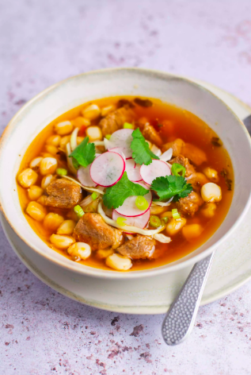
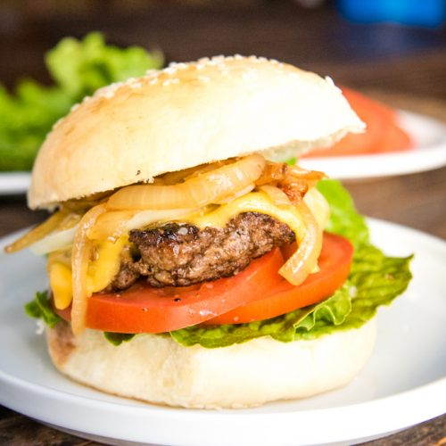

Cookbook
Pozole
Pozole is a traditional Mexican soup or stew that is usually served at big family gatherings or holidays.
Recipe was found at:
Pozole Recipe

Ingredient |
Quantity |
| Pork Shoulder | 2 pounds |
| Garlic | 3 cloves |
| Red Chiles of your choice | 3 Chiles |
| Salt | 2 teaspoons |
| Cooked Hominy | 3 1/2 cups |
| Dried Mexican Oregano | 1 teaspoon |
Instructions
- Gather the ingredients.
- Cut the pork
- Put the pork in cool water and bring to a boil, make sure to skim off foam.
- Peel garlic and remove the stem and the seeds form the chile.
- Add the garlic, chiles and salt to the pork.
- Reduce the heat and cook for 90 minutes or you could put an oven-proof pot in a 350 F oven for 90 minutes.
- After the pork is done cooking,add drained hominy and oregano and continue cooking
- Finally, Serve the pozole in bowls.
French Toast
One of my favorite breakfast foods out there is french toast, One day I was hungry and decided to use this recipe to make breakfast, Hope you enjoy!!
Recipe was found at:
French Toast Recipe
Ingredient |
Quantity |
| Eggs | 1 |
| Pure Vanilla extract | 1 teaspoon |
| Cinnamon | 1/2 teaspoon |
| Milk | 1/4 cup |
| Bread | 4 slices |
Instructions
- Beat egg,vanilla,and cinnamon in a dish and stir in milk
- Dip bread in egg mixture, on both sides evenly.
- Cook bread slices on a lightly greased nonstick griddle or skillet.
- Enjoy your french toast
Homemade Burger
One of my favorite summer foods is hamburgers, so I decided to add a hamburger recipe.
Recipe was found at:
Hamburger Recipe

Ingredient |
Quantity |
| Ground Beef | 2 lbs |
| Pepper | 1 teaspoon |
| Kosher Salt | 1 teaspoon |
| Dijon Mustard | 2 tablespoons |
| Worcestershire Sauce | 1.5 tablespoons |
Instructions
- Combine ground beef , pepper , salt, mustard and Worcestershire sauce.
- Gently form mixture into 8 patties.
- Heat grill or skillet to high.
- Cook patties for 2-3 minutes on each side.
- Serve on grilled hamburger buns with lettuce, cheese, tomato and onions.
- Enjoy!!